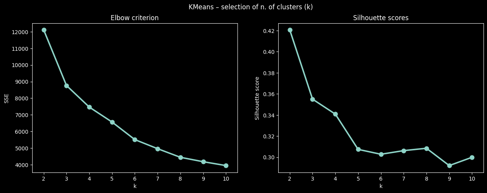
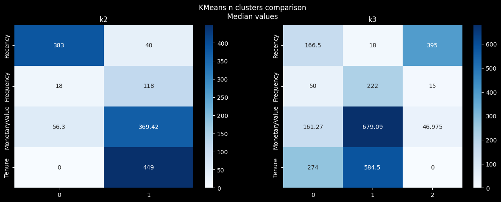

import pandas as pd
import numpy as np
import matplotlib.pyplot as plt
import seaborn as sns
import datetimedf = pd.read_parquet('../../data/concatenated_online_retail_II.parquet') \
.rename(columns={'Customer ID': 'CustomerID'})
df.info()<class 'pandas.core.frame.DataFrame'>
RangeIndex: 1067371 entries, 0 to 1067370
Data columns (total 9 columns):
# Column Non-Null Count Dtype
--- ------ -------------- -----
0 Invoice 1067371 non-null string
1 StockCode 1067371 non-null string
2 Description 1062989 non-null string
3 Quantity 1067371 non-null int64
4 InvoiceDate 1067371 non-null datetime64[us]
5 Price 1067371 non-null float64
6 CustomerID 824364 non-null float64
7 Country 1067371 non-null string
8 Year 1067371 non-null int64
dtypes: datetime64[us](1), float64(2), int64(2), string(4)
memory usage: 73.3 MBdf.describe()| Quantity | InvoiceDate | Price | CustomerID | Year | |
|---|---|---|---|---|---|
| count | 1.067371e+06 | 1067371 | 1.067371e+06 | 824364.000000 | 1.067371e+06 |
| mean | 9.938898e+00 | 2011-01-02 21:13:55.394029 | 4.649388e+00 | 15324.638504 | 1.507705e+00 |
| min | -8.099500e+04 | 2009-12-01 07:45:00 | -5.359436e+04 | 12346.000000 | 1.000000e+00 |
| 25% | 1.000000e+00 | 2010-07-09 09:46:00 | 1.250000e+00 | 13975.000000 | 1.000000e+00 |
| 50% | 3.000000e+00 | 2010-12-07 15:28:00 | 2.100000e+00 | 15255.000000 | 2.000000e+00 |
| 75% | 1.000000e+01 | 2011-07-22 10:23:00 | 4.150000e+00 | 16797.000000 | 2.000000e+00 |
| max | 8.099500e+04 | 2011-12-09 12:50:00 | 3.897000e+04 | 18287.000000 | 2.000000e+00 |
| std | 1.727058e+02 | NaN | 1.235531e+02 | 1697.464450 | 4.999409e-01 |
Computing Recency, Frequency, Monetary Value, and Tenure
First, we define a snapshot date – a simulated point in time when we run the analysis.
days_passed = 1
snapshot_date = df['InvoiceDate'].max() + datetime.timedelta(days=days_passed)Then we group by customer ID and calculate the RMF-T metrics. * Recency: Number of days since the last purchase for each customer. * Frequency: Number of purchases made by each customer. * MonetaryValue: Total amount spent by each customer. * Tenure: Number of days each customer has been active.
rmft = df.groupby('CustomerID').agg(
Recency = ('InvoiceDate', lambda x: (snapshot_date - x.max()).days),
Frequency = ('Invoice', 'count'),
MonetaryValue = ('Price', 'sum'),
Tenure = ('InvoiceDate', lambda x: (x.max() - x.min()).days)
)
rmft| Recency | Frequency | MonetaryValue | Tenure | |
|---|---|---|---|---|
| CustomerID | ||||
| 12346.0 | 326 | 48 | 580.44 | 400 |
| 12347.0 | 2 | 253 | 644.16 | 402 |
| 12348.0 | 75 | 51 | 193.10 | 362 |
| 12349.0 | 19 | 180 | 1504.59 | 716 |
| 12350.0 | 310 | 17 | 65.30 | 0 |
| ... | ... | ... | ... | ... |
| 18283.0 | 4 | 986 | 1719.75 | 654 |
| 18284.0 | 430 | 29 | 116.09 | 2 |
| 18285.0 | 661 | 12 | 100.20 | 0 |
| 18286.0 | 477 | 70 | 306.55 | 247 |
| 18287.0 | 43 | 156 | 348.89 | 695 |
5942 rows × 4 columns
Segmentation
The next step is to segment these values, typically by assigning a score from 1 to 4 (or 1 to 5) for each RFM parameter. The segmentation can be done based on quartiles or using other statistical methods. Customers with the lowest recency, highest frequency, and highest monetary values are considered the best.
quantiles = 4
rmft_scores = rmft.apply(lambda col: pd.qcut(col, q=quantiles, labels=False, duplicates='drop'), axis=0)
rmft_scores += 1
rmft_scores['Recency'] = rmft_scores['Recency'].max() + 1 - rmft_scores['Recency'] # inverting recency scores
rmft_scores['Score'] = rmft_scores.sum(axis=1)
rmft_scores['Segment'] = rmft_scores.apply(lambda row: ''.join(row.drop('Score').astype(str)), axis=1)
display(rmft_scores.describe())
rmft_scores| Recency | Frequency | MonetaryValue | Tenure | Score | |
|---|---|---|---|---|---|
| count | 5942.000000 | 5942.000000 | 5942.000000 | 5942.000000 | 5942.000000 |
| mean | 2.507573 | 2.483676 | 2.500000 | 1.748065 | 9.239313 |
| std | 1.122909 | 1.127454 | 1.118279 | 0.828488 | 3.488257 |
| min | 1.000000 | 1.000000 | 1.000000 | 1.000000 | 4.000000 |
| 25% | 2.000000 | 1.000000 | 1.250000 | 1.000000 | 6.000000 |
| 50% | 3.000000 | 2.000000 | 2.500000 | 1.000000 | 9.000000 |
| 75% | 4.000000 | 3.000000 | 3.750000 | 2.000000 | 12.000000 |
| max | 4.000000 | 4.000000 | 4.000000 | 3.000000 | 15.000000 |
| Recency | Frequency | MonetaryValue | Tenure | Score | Segment | |
|---|---|---|---|---|---|---|
| CustomerID | ||||||
| 12346.0 | 2 | 2 | 4 | 2 | 10 | 2242 |
| 12347.0 | 4 | 4 | 4 | 2 | 14 | 4442 |
| 12348.0 | 3 | 2 | 3 | 2 | 10 | 3232 |
| 12349.0 | 4 | 4 | 4 | 3 | 15 | 4443 |
| 12350.0 | 2 | 1 | 1 | 1 | 5 | 2111 |
| ... | ... | ... | ... | ... | ... | ... |
| 18283.0 | 4 | 4 | 4 | 3 | 15 | 4443 |
| 18284.0 | 1 | 2 | 2 | 1 | 6 | 1221 |
| 18285.0 | 1 | 1 | 2 | 1 | 5 | 1121 |
| 18286.0 | 1 | 3 | 3 | 2 | 9 | 1332 |
| 18287.0 | 3 | 4 | 3 | 3 | 13 | 3433 |
5942 rows × 6 columns
Clustering
Preprocessing
from sklearn.preprocessing import StandardScaler
log_rmft = np.log1p(rmft)
scaler = StandardScaler()
scaled_rmft = pd.DataFrame(scaler.fit_transform(log_rmft), columns=rmft.columns, index=rmft.index)
scaled_rmft.describe()| Recency | Frequency | MonetaryValue | Tenure | |
|---|---|---|---|---|
| count | 5.942000e+03 | 5.942000e+03 | 5.942000e+03 | 5.942000e+03 |
| mean | -3.121031e-16 | 5.234603e-16 | 2.774250e-16 | -2.391595e-17 |
| std | 1.000084e+00 | 1.000084e+00 | 1.000084e+00 | 1.000084e+00 |
| min | -2.357189e+00 | -2.368299e+00 | -3.445497e+00 | -1.551241e+00 |
| 25% | -7.427957e-01 | -6.485059e-01 | -6.144773e-01 | -1.551241e+00 |
| 50% | 8.588894e-02 | -4.493552e-03 | 2.582970e-02 | 5.130351e-01 |
| 75% | 9.486214e-01 | 7.039300e-01 | 6.831079e-01 | 8.289068e-01 |
| max | 1.364803e+00 | 3.933870e+00 | 4.064607e+00 | 9.642227e-01 |
Model selection
from sklearn.cluster import KMeans
from sklearn.metrics import silhouette_score
n_clusters = list(range(2, 11))
sil_scores = []
sse = []
for k in n_clusters:
kmeans = KMeans(n_clusters=k, random_state=1, n_init='auto')
kmeans.fit(scaled_rmft)
sse.append(kmeans.inertia_)
sil_scores.append(silhouette_score(scaled_rmft, kmeans.labels_))
k_sel_df = pd.DataFrame({'silhouette_score': sil_scores, 'sse': sse}, index=n_clusters)fig, axes = plt.subplots(1,2, figsize=(15,5),
# dpi=300
)
sns.pointplot(k_sel_df, x=k_sel_df.index, y='sse', ax=axes[0])
axes[0].set_title("Elbow criterion")
axes[0].set_xlabel('k'); axes[0].set_ylabel('SSE')
sns.pointplot(k_sel_df, x=k_sel_df.index, y='silhouette_score', ax=axes[1])
axes[1].set_title("Silhouette scores")
axes[1].set_xlabel('k'); axes[1].set_ylabel('Silhouette score')
plt.suptitle("KMeans – selection of n. of clusters (k)")
plt.show()
Predictions
rmft_k = rmft.copy()
k_cols = []
for k in range(2,4):
model = KMeans(n_clusters=k,random_state=1, n_init='auto')
col_name = f'k{k}'
rmft_k['kn'] = col_name
rmft_k[f'k{k}'] = model.fit_predict(scaled_rmft)
k_cols.append(col_name)
rmft_k| Recency | Frequency | MonetaryValue | Tenure | kn | k2 | k3 | |
|---|---|---|---|---|---|---|---|
| CustomerID | |||||||
| 12346.0 | 326 | 48 | 580.44 | 400 | k3 | 1 | 0 |
| 12347.0 | 2 | 253 | 644.16 | 402 | k3 | 1 | 1 |
| 12348.0 | 75 | 51 | 193.10 | 362 | k3 | 1 | 0 |
| 12349.0 | 19 | 180 | 1504.59 | 716 | k3 | 1 | 1 |
| 12350.0 | 310 | 17 | 65.30 | 0 | k3 | 0 | 2 |
| ... | ... | ... | ... | ... | ... | ... | ... |
| 18283.0 | 4 | 986 | 1719.75 | 654 | k3 | 1 | 1 |
| 18284.0 | 430 | 29 | 116.09 | 2 | k3 | 0 | 2 |
| 18285.0 | 661 | 12 | 100.20 | 0 | k3 | 0 | 2 |
| 18286.0 | 477 | 70 | 306.55 | 247 | k3 | 1 | 0 |
| 18287.0 | 43 | 156 | 348.89 | 695 | k3 | 1 | 1 |
5942 rows × 7 columns
kns = [col for col in rmft_k.columns if 'k' in col]
k_summaries = {col:rmft_k.groupby(col).median().reset_index(drop=True).iloc[:, :-1] for col in kns}fig, ax = plt.subplots(1, 2, figsize=(15,5))
for n, kn in enumerate(k_summaries.keys()):
sns.heatmap(k_summaries[kn].T, annot=True, fmt='g', ax=ax[n], cmap='Blues')
ax[n].set_title(kn)
plt.suptitle("KMeans n clusters comparison\nMedian values")
plt.show()
K2 Clustering (2 Clusters): * Cluster 0 (Newer, Less Engaged) * Cluster 1 (High Tenure and Spend)
K2 Clustering (2 Clusters): Cluster 0: This cluster represents customers who are relatively new (low tenure and recency), with fewer purchases (low frequency), and low total spend (low monetary value). Cluster 1: Customers in this cluster have been associated with the retail for a longer time (high tenure), have a moderate number of purchases (frequency), and have spent a significant amount overall (high monetary value).
K3 Clustering (3 Clusters): * Cluster 0 (Occasional Big Spenders): This cluster’s customers have a moderately recent last purchase, they buy infrequently, but they tend to spend more. Their Tenure is moderate, suggesting they are neither new nor long-time customers.
Cluster 1 (New, Growing Relationship): Customers here have the most recent engagement, moderate purchase frequency, and have spent a moderate amount. They are likely relatively new, as indicated by the lower Tenure.
Cluster 2 (Loyal and Frequent Customers): These customers have less recent engagement compared to the others but have the highest purchase frequency and spend the most, with the longest Tenure. They represent well-established, loyal customers who are valuable to the business.
Customer Profiles Based on Clustering: * K2 Cluster 0 (Established Valuable Customers): These customers are valuable due to their high spend per purchase. Since they’re established with high tenure, retention strategies should focus on increasing purchase frequency.
K2 Cluster 1 (New or Inactive Customers): They need nurturing to develop into more valuable customers. Welcome campaigns, educational content about products, and incentives to make the second purchase could be effective.
K3 Cluster 0 (Mid-Tier Customers): They may need encouragement to purchase more frequently or to continue their pattern of high spending. Membership programs or tiered rewards could motivate more frequent engagement.
K3 Cluster 1 (Emerging Customers): These customers are in the early stages of their lifecycle but show promise with moderate frequency and spending. Onboarding strategies, first-purchase thank-you discounts, and product recommendations could build their engagement.
K3 Cluster 2 (Core Customers): This group is likely responsible for a significant portion of revenue due to their frequent purchases and high spending over a long period. Retention is critical, and personalized experiences or rewards for their loyalty can be very effective.
Strategies for Each Cluster: For Established Valuable Customers (K2 Cluster 0): Since their purchase frequency is low, targeted offers based on past purchase behavior, reminders for repurchase, and cross-selling strategies can be applied.
For New or Inactive Customers (K2 Cluster 1): Engagement campaigns that educate about the brand and provide incentives for increased interaction and purchasing can help move them along the customer journey.
For Mid-Tier Customers (K3 Cluster 0): Consider creating personalized marketing campaigns that reward their spending habits and encourage more frequent purchases.
For Emerging Customers (K3 Cluster 1): Develop nurture campaigns with incentives for repeat purchases and personalized recommendations based on their initial purchases.
For Core Customers (K3 Cluster 2): Implement VIP programs, exclusive access to products, and personalized services that acknowledge their loyalty and high value to the brand.